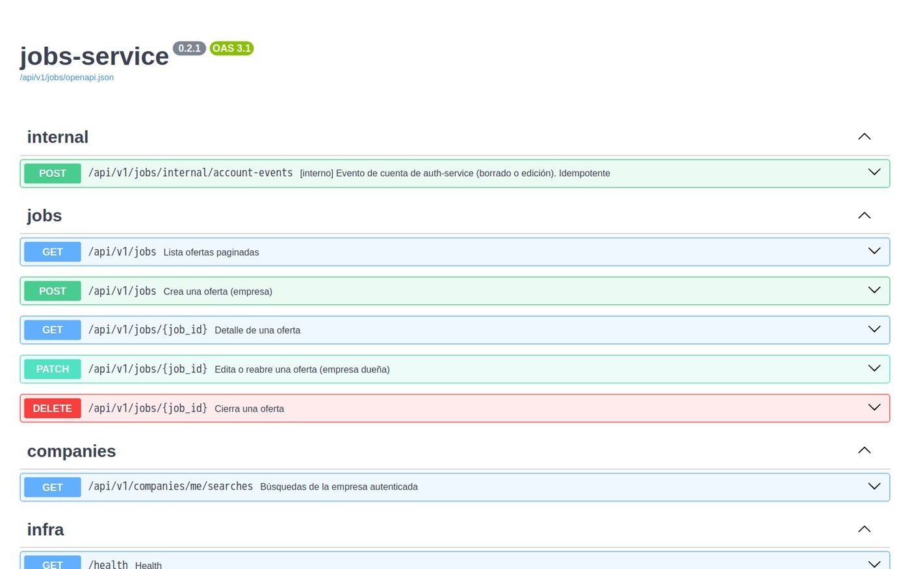
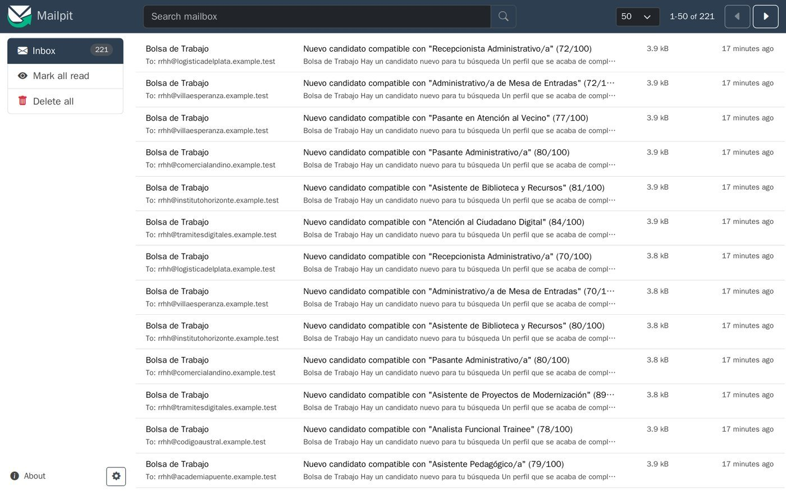
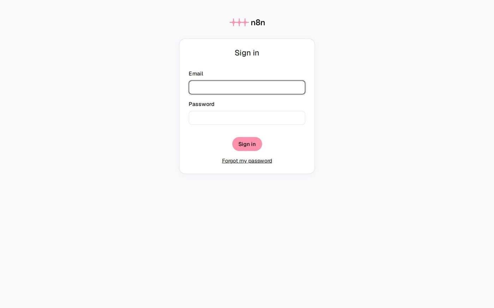

Cómo instalar, configurar y poner en marcha la Bolsa de Trabajo con Docker, e importar los datos de prueba.
La aplicación corre completa en contenedores Docker: no hace falta instalar Python, Node ni PostgreSQL en la máquina.
| Requisito | Detalle |
|---|---|
| Docker Desktop | Con Docker Compose v2 (docker compose version). Es lo único obligatorio. En Windows usa el backend WSL 2: hace falta la virtualización habilitada en el firmware (BIOS/UEFI) y los componentes «Plataforma de máquina virtual» y WSL. Si wsl --status avisa que WSL 2 no puede iniciar, habilitarlos como administrador con wsl --install --no-distribution y reiniciar la máquina. |
| Git | Para clonar el repositorio. |
| OpenSSL | Para generar las claves JWT. Viene con Git Bash en Windows, y con macOS y Linux. |
| API key de NVIDIA NIM (gratuita) | Para los agentes de IA: creá una cuenta en https://build.nvidia.com, entrá a API Keys y generá una. Sin la key funciona todo lo demás (cuentas, perfiles, búsquedas, puntaje por reglas, avisos), pero la lectura de CVs y las recomendaciones de IA no responden. |
| API key de Gemini (opcional) | Sólo se usa con GEMINI_ENABLED=true en .env; en ese caso Gemini se intenta antes que NVIDIA y, si falla o se pasa del cupo, el router sigue con los modelos de NVIDIA. NVIDIA_API_KEY y GEMINI_API_KEY son las dos únicas variables que .env.example deja vacías. |
| Memoria y disco | 8 GB de RAM como mínimo (16 GB recomendado) y unos 10 GB libres para las imágenes. |
| Fuera de Docker (opcional) | Python 3.12 y Node 22 (sección 3.8). |
Puertos que usa en la máquina (se cambian en .env si están ocupados): 8080 la aplicación, 5678 n8n, 8025 Mailpit y 5432 PostgreSQL (sólo en desarrollo).
Todo entra por un único punto, el gateway Nginx (http://localhost:8080), que sirve el frontend y deriva /api/v1/* a cada microservicio.
| Contenedor | Para qué sirve |
|---|---|
| gateway | Nginx: entrada única a la aplicación y a la API. |
| frontend | React: las pantallas de estudiantes, empresas y administradores. |
| auth-service | Cuentas, inicio de sesión (JWT) y administración de cuentas. |
| profile-service | Perfiles de estudiantes y empresas, CV y logos. |
| jobs-service | Búsquedas (ofertas) de las empresas. |
| matching-service | Puntaje de compatibilidad por reglas y recomendaciones guardadas. |
| n8n | Workflows de IA y avisos por mail. Al arrancar importa sus credenciales y workflows. |
| mcp-tools | Herramientas que usan los agentes de IA de n8n (sólo red interna). |
| postgres | Base de datos: un schema por servicio y una base propia para n8n. |
| Mailpit: recibe todos los mails para verlos sin enviarlos a internet (SMTP 1025, pantalla 8025). | |
| IA externa | NVIDIA NIM (API gratuita). Sólo n8n la llama, por HTTPS. |
El diagrama de componentes, las redes y los recorridos de datos están en docs/ARQUITECTURA.md.
Reglas e IA separadas. El puntaje de compatibilidad lo calcula siempre el motor de reglas. La IA sólo sugiere y explica; nunca cambia el puntaje.
git clone https://github.com/Grupo-1-EPIALC/bolsa-de-trabajo.git
cd bolsa-de-trabajoCopiá el ejemplo. En desarrollo sólo hace falta completar NVIDIA_API_KEY: el resto de los valores de ejemplo sirven.
cp .env.example .envEn un servidor real cambiá además todas las claves y tokens:
| Variable | Qué poner |
|---|---|
POSTGRES_PASSWORD y las *_DB_PASSWORD | Claves de la base y de cada servicio. |
SERVICE_TOKEN | Token entre servicios: openssl rand -hex 32 |
N8N_ENCRYPTION_KEY | openssl rand -hex 24. No cambiarla después: cifra las credenciales de n8n. |
N8N_WEBHOOK_TOKEN | openssl rand -hex 32 |
NVIDIA_API_KEY | La clave de NVIDIA NIM para los agentes de IA (nunca va al repositorio). |
GEMINI_ENABLED y GEMINI_API_KEY | Opcionales. Con GEMINI_ENABLED=true y una clave, Gemini va primero en las listas de modelos y NVIDIA queda de respaldo. |
PROFILE_SEED_DEMO / JOBS_SEED_DEMO | false si vas a importar los datos de prueba (sección 4). |
mkdir -p secrets
openssl genpkey -algorithm RSA -pkeyopt rsa_keygen_bits:2048 -out secrets/jwt_private.pem
openssl rsa -in secrets/jwt_private.pem -pubout -out secrets/jwt_public.pemLa carpeta secrets/ está en .gitignore: las claves no se suben nunca.
Tener Docker Desktop instalado no alcanza: el daemon tiene que estar levantado, o los pasos siguientes fallan. Abrir la aplicación no siempre arranca el motor, así que conviene forzarlo y verificar:
docker compose version # confirma Compose v2+
docker desktop start # si `docker info` todavía no responde
docker info # no seguir hasta que este comando funcioneSi docker info falla con cannot find the file ... dockerDesktopLinuxEngine, el daemon todavía no está listo: esperá a que docker desktop start termine y volvé a probar.
sh infra/scripts/create-volumes.shEn PowerShell: docker volume create bolsa_pg_data; docker volume create bolsa_n8n_data; docker volume create bolsa_cv_storage. Los datos viven en esos volúmenes y sobreviven a recrear los contenedores.
docker compose up -d --build
docker compose psLa primera vez tarda varios minutos en construir las imágenes. n8n tarda un poco más: antes de arrancar importa sus credenciales y publica los 10 workflows.
Estado esperado. Los 8 servicios que definen healthcheck tienen que quedar healthy. auth-service y frontend no definen healthcheck, así que quedan en Up sin estado de salud: es lo correcto, no hay que esperar un healthy que no va a llegar.
auth-service Up 2 minutes
frontend Up 2 minutes
gateway Up 2 minutes (healthy)
jobs-service Up 2 minutes (healthy)
mail Up 2 minutes (healthy)
matching-service Up 2 minutes (healthy)
mcp-tools Up 2 minutes (healthy)
n8n Up 2 minutes (healthy)
postgres Up 2 minutes (healthy)
profile-service Up 2 minutes (healthy)Modo tipo producción (sin recarga automática del código): docker compose -f docker-compose.yml up -d --build.
| Acción | Comando |
|---|---|
| Levantar todo | docker compose up -d --build |
| Ver el estado | docker compose ps |
| Ver los logs de un servicio | docker compose logs -f matching-service |
| Detener sin borrar contenedores | docker compose stop |
| Volver a arrancar lo detenido | docker compose start |
| Reiniciar un servicio | docker compose restart profile-service |
| Reiniciar n8n y volver a cargar los workflows | docker compose up -d --force-recreate n8n |
| Reconstruir un servicio después de cambiar dependencias | docker compose up -d --build jobs-service |
| Apagar y borrar contenedores (los datos quedan) | docker compose down |
Cada servicio Python declara sus dependencias en pyproject.toml (las usan los Dockerfiles) y en un requirements.txt equivalente. El requirements.txt de la raíz los incluye a todos:
python -m venv .venv && source .venv/bin/activate # Windows: .venv\Scripts\activate
pip install -r requirements.txtLos servicios Node (auth-service y frontend) usan package.json y package-lock.json (npm ci).
En infra/datos-prueba/ hay un juego de datos ficticio para probar la aplicación sin cargar nada a mano:
bolsa_datos_prueba.sql: 2 administradores, 10 empresas con perfil, logo y 5 búsquedas cada una, 50 estudiantes con perfil completo (Administración, IT, Educación y Administración pública) y la configuración de matching.usuarios_prueba.xlsx: todas las cuentas con su clave, los perfiles, las empresas y las búsquedas.Pasos:
.env: PROFILE_SEED_DEMO=false y JOBS_SEED_DEMO=false.docker compose exec -T postgres sh -c 'psql -U "$POSTGRES_USER" -d "$POSTGRES_DB" -v ON_ERROR_STOP=1 -q' \
< infra/datos-prueba/bolsa_datos_prueba.sqlEn PowerShell:
Get-Content infra/datos-prueba/bolsa_datos_prueba.sql -Raw |
docker compose exec -T postgres sh -c 'psql -U "$POSTGRES_USER" -d "$POSTGRES_DB" -v ON_ERROR_STOP=1 -q'| Cuenta de prueba | Rol |
|---|---|
admin.prueba@example.test | Administrador |
rrhh@nubeteca.example.test (y las otras 9 rrhh@…) | Empresa |
lucia.gonzalez00@example.test (y los otros 49) | Estudiante |
Todas usan la clave BolsaPrueba2026!. La configuración de n8n no va en el dump: la arma el propio contenedor en cada arranque desde .env y n8n/workflows/.
Mientras PROFILE_SEED_DEMO y JOBS_SEED_DEMO estén en true, los servicios cargan solos un juego de demo (15 perfiles y 12 ofertas), pero no hay cuentas de administrador. Las cuentas admin no se crean desde la pantalla de registro: registrate como estudiante, cambiale el rol (con los valores de POSTGRES_USER y POSTGRES_DB de .env) y volvé a iniciar sesión:
docker compose exec postgres psql -U postgres -d bolsa \
-c "UPDATE auth.users SET role='admin' WHERE email='admin@bolsa.local';"Todos los datos del repositorio son ficticios.
Abrí http://localhost:8080 e ingresá con una cuenta de prueba.
Cada servicio publica su documentación en http://localhost:8080/api/v1/<recurso>/docs (Swagger UI), /redoc y /openapi.json, con <recurso> = auth, profiles, jobs o matches. El panel de administración tiene los enlaces.

Todos los mails (avisos de ofertas y candidatos nuevos, recuperación de clave, errores) llegan a Mailpit: http://localhost:8025.

Los workflows de IA se ven en http://localhost:5678. La primera vez n8n pide crear la cuenta de dueño. Los workflows se cargan solos: lo que se cambie sólo en la pantalla de n8n se pisa en el próximo arranque, porque el repositorio es la fuente de verdad.

| Síntoma | Qué hacer |
|---|---|
docker falla con cannot find the file ... dockerDesktopLinuxEngine |
El daemon no está corriendo. Abrir Docker Desktop no siempre alcanza: ejecutá docker desktop start y esperá a que docker info responda antes de seguir (sección 3.4). |
En Windows, wsl --status avisa que WSL 2 no puede iniciar |
Falta la virtualización o el componente «Plataforma de máquina virtual». Habilitalos como administrador con wsl --install --no-distribution, reiniciá la máquina y verificá que la virtualización esté activa en el firmware (BIOS/UEFI). |
auth-service y frontend nunca llegan a healthy |
Es lo esperado: no definen healthcheck y quedan en Up. Comparalo con el estado esperado de la sección 3.6. |
| Un puerto está ocupado | Cambiá GATEWAY_PORT, N8N_PORT, MAIL_UI_PORT o POSTGRES_HOST_PORT en .env y volvé a levantar. |
| La IA no responde o da error | Revisá NVIDIA_API_KEY en .env y recreá n8n: docker compose up -d --force-recreate n8n. |
| n8n se reinicia en bucle con You do not have permission to deactivate this workflow | La base quedó con workflows activados por otra versión de n8n. Una vez: docker compose stop n8n, docker compose run --rm --no-deps --entrypoint n8n n8n unpublish:workflow --all y docker compose up -d n8n. |
| Cambié un workflow y no se ve | python n8n/generate_workflows.py y docker compose up -d --force-recreate n8n. |
Aparecen perfiles y ofertas de demo (stu-001, job-001…) | Poné PROFILE_SEED_DEMO=false y JOBS_SEED_DEMO=false y volvé a importar el dump. |
| Quiero empezar de cero | Se pierde todo: docker compose down, docker volume rm bolsa_pg_data bolsa_n8n_data bolsa_cv_storage y sh infra/scripts/create-volumes.sh. |
.env, secrets/ y *.pem están en .gitignore.bootstrap.sh desde .env en cada arranque.usuarios_prueba.xlsx son ficticias y sólo sirven para el entorno local.| Documento | Contenido |
|---|---|
README.md | Instalación, ejecución, funcionalidades y recorrido sugerido para la demo |
docs/ARQUITECTURA.md | Diagrama de arquitectura, redes, puertos y recorrido de los datos |
docs/BITACORA_IA.md | Bitácora de uso de IA: herramientas, decisiones, modelo elegido y sus límites |
docs/RESPONSABILIDADES.md | Responsabilidades de cada integrante |
docs/ENTREGA.md | Correspondencia entre la consigna y el repositorio |
PROMPTS.md y AGENTS.md | Historial de prompts y reglas de arquitectura y de agentes |
contracts/ | Un contrato por servicio (endpoints, JSON y errores) |
n8n/workflows/ | Workflows de n8n exportados en JSON |